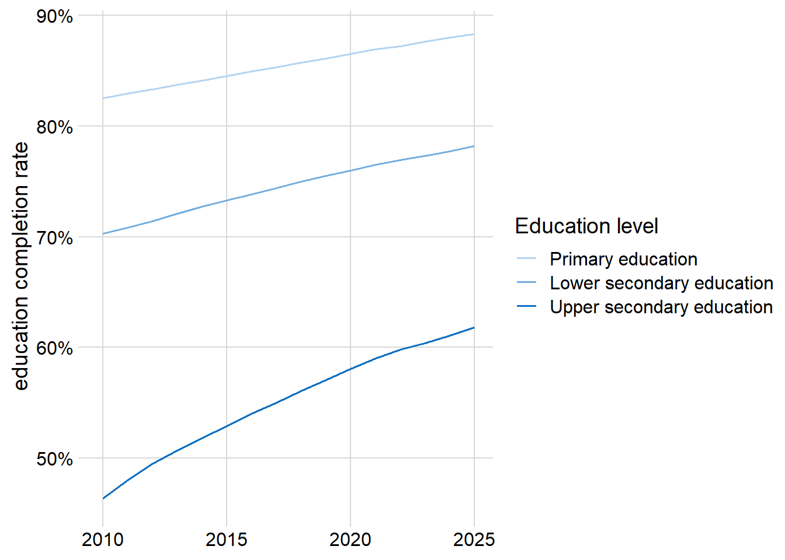
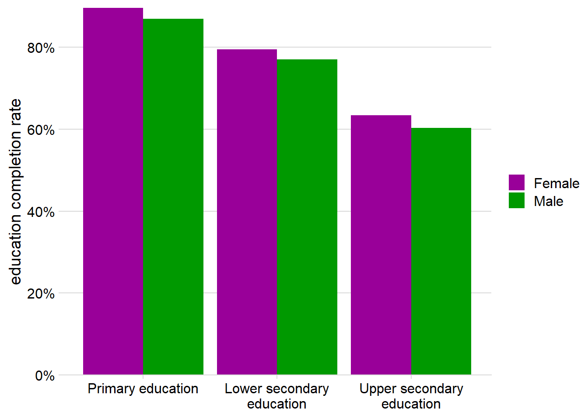

Show the code
comp_world <- comp_rt |>
filter(regionId == 1) |>
left_join(edu, by = c("educationCode" = "code"))
pal <- palettes$education(11)
comp_world |>
filter(sexCode == "_T", dwellingUrbanisationCode == "_T", quantileCode == "_T") |>
ggplot(aes(x = year, y = value)) +
geom_line(aes(color = factor(name, levels = c("Primary education", "Lower secondary education", "Upper secondary education")))) +
scale_color_manual("Education level", values = c("Primary education" = pal[3], "Lower secondary education" = pal[6], "Upper secondary education" = pal[11])) +
scale_y_continuous("education completion rate", labels = scales::percent_format(scale = 1)) +
labs(x = NULL) +
theme_minimal_grid()
Show the code
comp_world |>
filter(sexCode != "_T", dwellingUrbanisationCode == "_T", quantileCode == "_T", year == max(year)) |>
ggplot(aes(x = factor(name, levels = c("Primary education", "Lower secondary education", "Upper secondary education"), labels = c("Primary education", "Lower secondary\neducation", "Upper secondary\neducation")), y = value)) +
geom_col(aes(fill = sexCode), position = "dodge") +
scale_fill_ghro("gender") +
scale_y_continuous("education completion rate", labels = scales::percent_format(scale = 1), expand = c(0, 0)) +
labs(x = NULL) +
theme_minimal_hgrid()